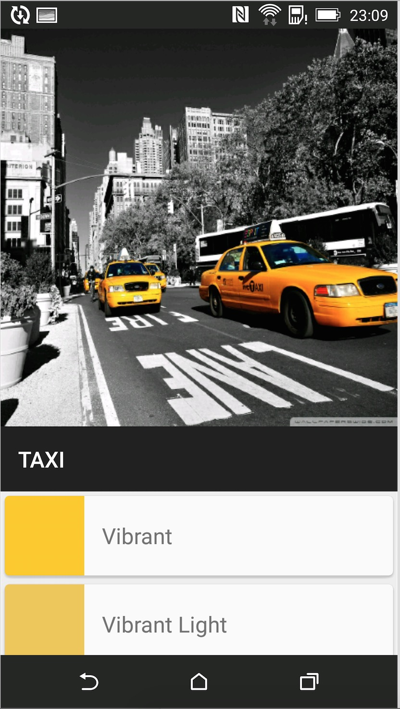
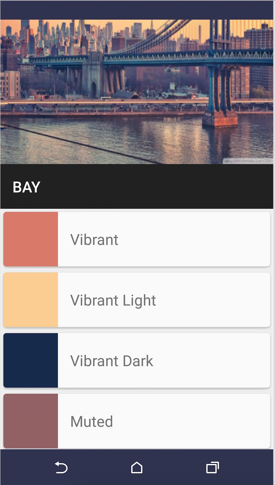

Material Design 是我很喜欢的设计风格，简约至上。去年 Google IO 推出之后，就已经了解了。但是一直没有怎么看 Android L 的 API。趁 Android M 推出这段时间，就试着去使用了下 Android 5.0。
Material Design 中文版 刚出来的时候，参与翻译了其中一章，算是国内最早的中文版吧。
看了 Android Training 里面的 Create App With Material Design，就写了一个简单的 Demo，不完整，但也涉及到了大部分常用的内容。
Overview
Material Theme Activity Transition RecyclerView & CardView Palette Ripple
Screenshot


Material Theme Material 的主题其实和 Holo 的类型差不多，有这样的：
android:Theme.Material.Lightandroid:Theme.Material.Light.DarkActionBarandroid:Theme.Material
除了这个，还可以在 Theme 里面重写一些属性来定义状态栏、标题栏和一些控件的颜色。
1 2 3 4 5 6 7 8 9 10 11 12 <resources> <! <style name ="AppTheme" parent="android:Theme.Material" > <! <! <item name ="android:colorPrimary" >@color/primary</item > <! <item name ="android:colorPrimaryDark" >@color/primary_dark</item > <! <item name ="android:colorAccent" >@color/accent</item > </style> </resources>
Activity Transition 这里的 Translation 是 Shared Element。在主页（图1）的 GridView 点击 item 之后，图片和文字将会有放大的效果，直接连接下一个 Activity 里面的图片和文字。在详情页面（图2）点击返回之后，图片和文字又回缩回主页中。
实现这个效果需要 Android 5.0 以上的版本。
1 2 3 4 5 6 7 8 9 10 Intent intent = new Intent(MainActivity.this ,DetialActivity.class ); intent.putExtra(DetialActivity.COLOR_INDEX,position); ActivityOptionsCompat activityOptions = ActivityOptionsCompat.makeSceneTransitionAnimation(MainActivity.this , new Pair<View, String >(view.findViewById(R.id.imageview_item),DetialActivity.DETIAL_IMAGE),new Pair<View, String >(view.findViewById(R.id.textview_name),DetialActivity.DETIAL_NAME));ActivityCompat.startActivity(MainActivity.this , intent, activityOptions.toBundle());
主要用的是makeSceneTransitionAnimation这个方法，在 Pair 这个参数中是可以关联很多个数据的，这里之后图片和文字。
很重要的，要为每一个关联的 View 设定一个TransitionName，这里是DETIAL_IMAGE和DETIAL_NAME。
同样，在另外一个 Activity 里面需要为关联的 View 设置这个 Transition Name。
1 2 ViewCompat .setTransitionName (mHeaderImageView , DETIAL_IMAGE );ViewCompat .setTransitionName (mHeaderTitle , DETIAL_NAME );
然后再让 View 显示就可以了。其实这里可以自定义各种activityOptions，来定义 Activity Transition 动画。
RecyclerView & CardView RecyclerView 就不再做介绍了，这里是和 CardView 一起使用的。在详情页（图2）下方的显示的就是。先来看 CardView。
1 2 3 4 5 6 7 <android.support .v7 .widget .CardView xmlns:card_view="http://schemas.android.com/apk/res-auto" android:layout_width="match_parent" android:layout_height="match_parent" android:layout_margin="4dp" card_view:cardCornerRadius="4dp" > </android.support .v7 .widget .CardView >
CardView 还有很多属性，比如阴影。这里只用了cardCornerRadius来设置圆角。然后把需要显示的布局嵌套在 CardView 里面就行。
RecyclerView 相对 ListView 来说，比较大的一个变化就是多了一个LayoutManager。
1 2 layoutManager = new FullyLinearLayoutManager(this ); recyclerView.setLayoutManager(layoutManager);
这里的FullyLinearLayoutManager是继承的 LinearLayoutManager，因为 RecyclerView 和 ScrollView 有冲突。
1 2 3 4 5 6 7 8 9 10 11 12 public static class ViewHolder extends RecyclerView .ViewHolder { private TextView tvColorName; private ImageView imgColor; public ViewHolder (View itemView) { super (itemView); tvColorName = (TextView )itemView.findViewById(R .id.item_tv); imgColor = (ImageView )itemView.findViewById(R .id.item_img); } }
这个是 RecyclerView 的 ViewHolder，和 ListView 里面差不多。
继承RecyclerView.Adapter需要重写3个方法。
1 2 3 4 5 6 7 8 9 10 11 12 13 14 15 16 17 18 19 20 21 22 23 24 25 26 27 28 29 30 31 @Override public ViewHolder onCreateViewHolder (ViewGroup parent, int viewType) { return new ViewHolder(layoutInflater.from(context).inflate(R.layout.recycler_item,parent,false )); } @Override public void onBindViewHolder (ViewHolder holder, int position) final int index = position; holder.tvColorName.setText(dataSet.get(position).getColorName()); holder.imgColor.setBackgroundColor(dataSet.get(position).getColorRes()); holder.tvColorName.setOnClickListener(new View.OnClickListener() { @Override public void onClick (View v) Message msg = new Message(); msg.arg1 = dataSet.get(index).getColorRes(); msg.what = DetialActivity.CHANGE_COLOR; handler .sendMessage(msg); } }); } @Override public int getItemCount () return dataSet.size () }
在onCreateViewHolder传入之前写的 ViewHolder，在onBindViewHolder中绑定数据。
Palette 这个 Palette 是我相当喜欢的，能够获取到图像中的颜色数据。Android 5.0中还有一个Clip Views用来填充图片也不错。
在 RecyelerView 当中的数据就是用 Palette 获取的。
1 2 3 4 5 6 7 8 9 10 11 12 13 14 15 Palette .generateAsync(bitmap,new Palette .PaletteAsyncListener(){ @Override public void onGenerated(Palette palette ) { Palette .Swatch vibrantSwatch = palette .getVibrantSwatch(); Palette .Swatch lightVibrantSwatch = palette .getLightVibrantSwatch(); Palette .Swatch paletteDarkVibrantSwatch = palette .getDarkVibrantSwatch(); Palette .Swatch mutedSwatch = palette .getMutedSwatch(); Palette .Swatch darkMutedSwatch = palette .getDarkMutedSwatch(); Palette .Swatch lightMutedSwatch = palette .getLightMutedSwatch(); ｝
一共获取了这几种颜色。是的，获取到的这些颜色是拿来更改状态栏或者标题栏的颜色。当然也可以是别的控件，主要目的是让整个 APP UI 更加统一。
1 2 3 Window window = getWindow(); window .setStatusBarColor(color );window .setNavigationBarColor(color );
Ripple 这个 Ripple 涟漪效果也是很不错的，有分为无界和有界的。这里也只是简单使用了下，在 RecyelerView 的 item 中，使用
1 android: background="?android:attr/selectableItemBackground"
更多使用方法可以在官网中查看。
当然，Android 5.0 不仅仅这些，这里是很小一部分，还有很重要动画，阴影等。Material Design 给我最大的印象就是它的动画效果很不错。
源码在这里